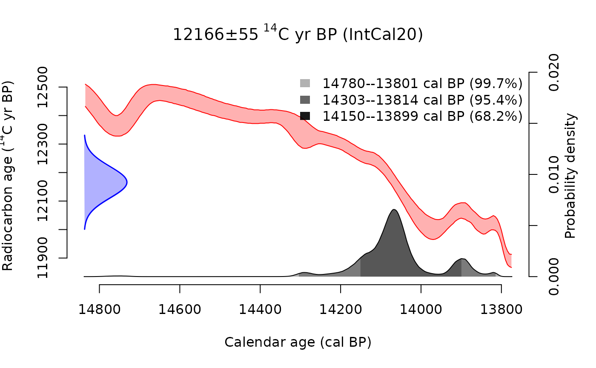
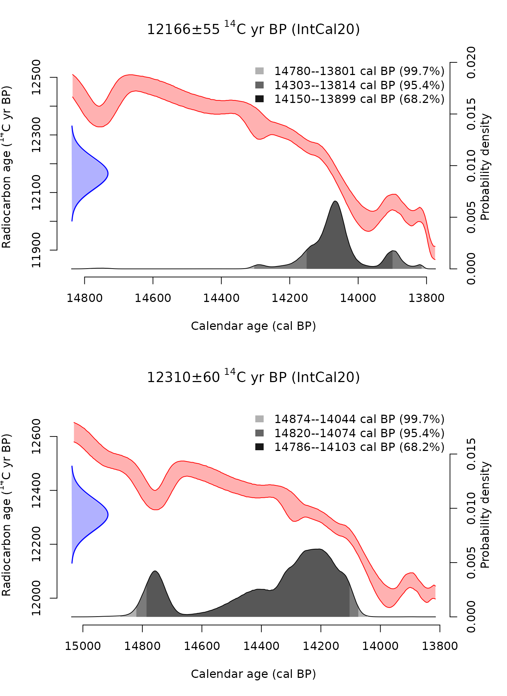
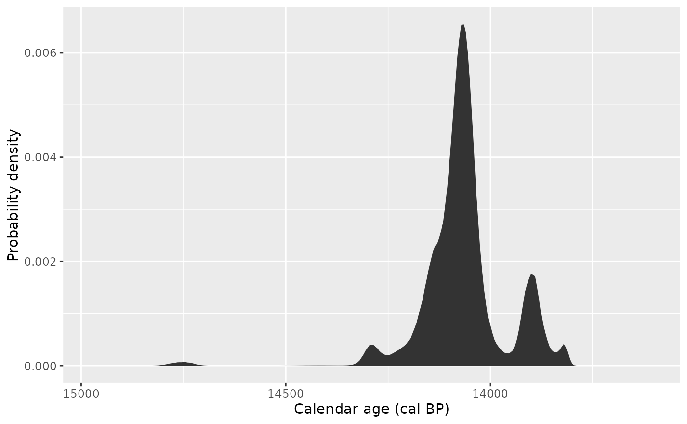
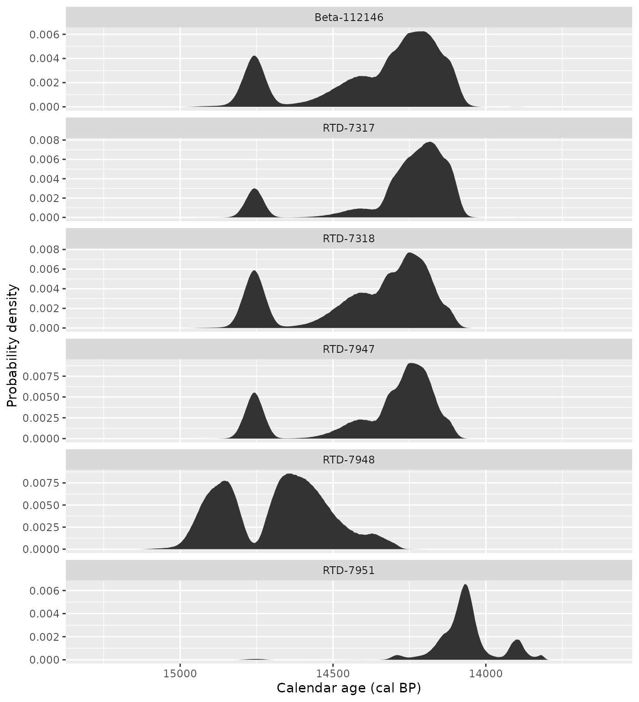
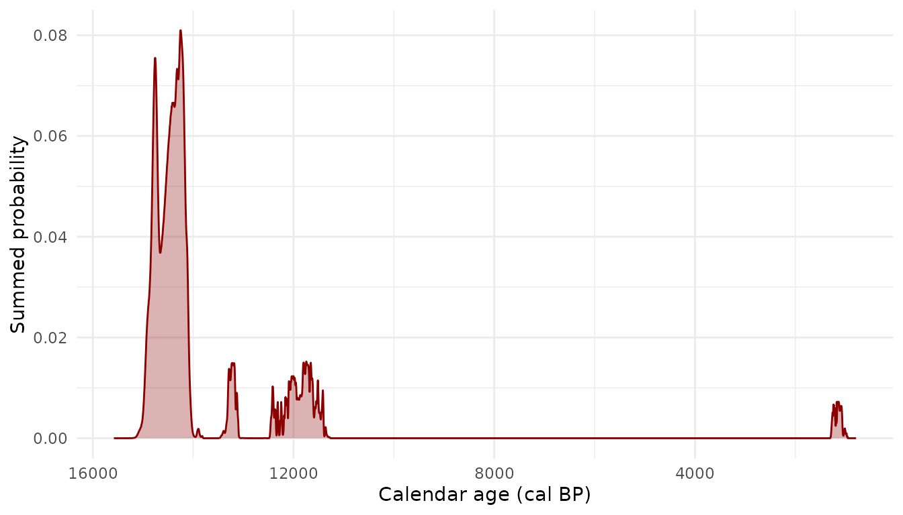
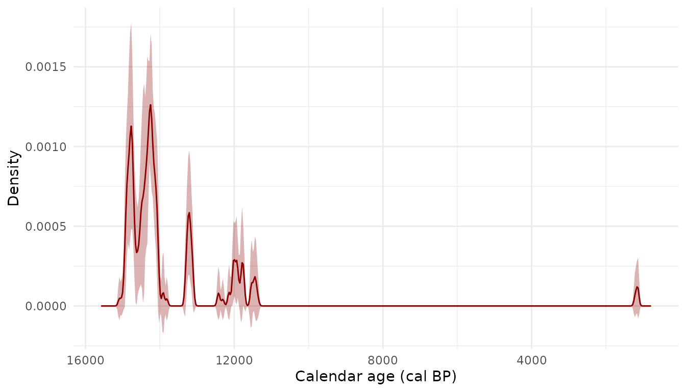
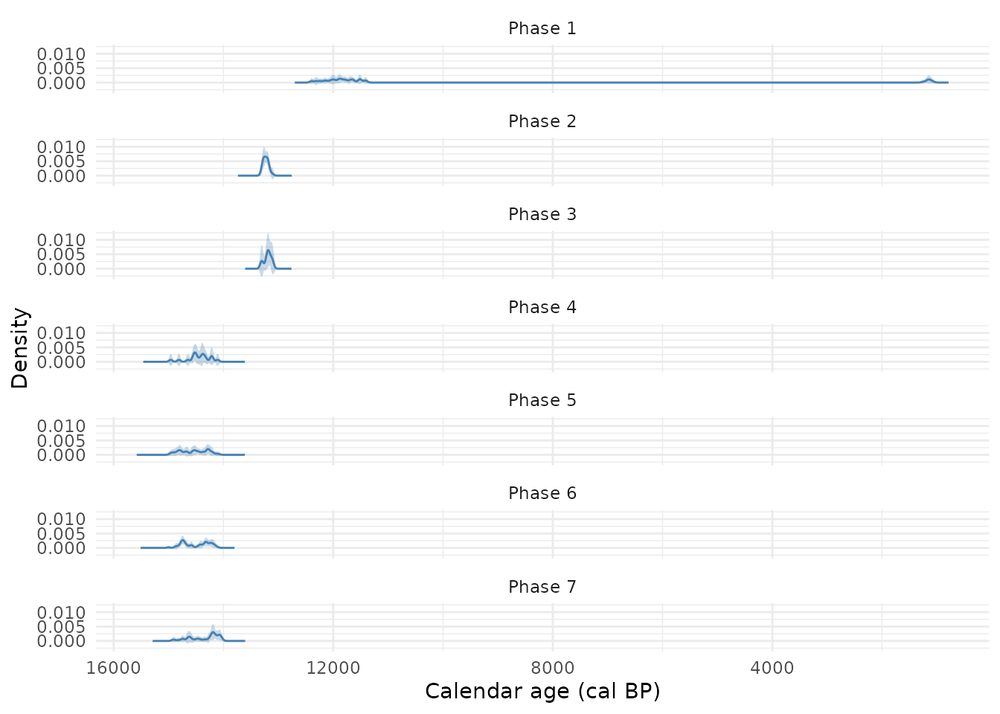

c14 makes it easy and intuitive to incorporate radiocarbon dating into tidy data analysis workflows in R. It provides classes and functions for radiocarbon data that fit nicely in tables and work well with pipes and dplyr verbs.
This vignette introduces functions for the most common tasks when working with radiocarbon data, including those for calibrating, summarising, aggregating and plotting radiocarbon dates.
Calibrating radiocarbon dates
c14_calibrate() calibrates conventional radiocarbon ages
and their errors to a calendar timescale:
c14_calibrate(5000, 30)
#> <c14_cal[1]>
#> [1] 5604–5891 cal BPBy default, c14_calibrate() uses the IntCal20
calibration curve (Reimer et al. 2020),
which is recommended for terrestrial dates from the northern hemisphere.
You can change this with the c14_curve argument (see
?IntCal20 for the available curves).
c14_calibrate() returns a year with an era (a
era::yr vector), indicating the age is expressed as
calibrated years Before Present (‘cal BP’). Most functions in the
package return yrs and work with them internally to ensure that
calendric calculations are consistent.
Calibration is vectorised, so you can calibrate many dates at once:
ages <- c(5000, 6000, 7000)
errors <- c(30, 40, 50)
c14_calibrate(ages, errors)
#> <c14_cal[3]>
#> [1] 5604–5891 cal BP 6740–6946 cal BP 7705–7934 cal BPThis unlocks the real utility of the c14 package, which is embedding
calibration in a tidy workflow. For example, the shub1_c14
dataset (provided with the package) contains 27 radiocarbon dates from
the Epipalaeolithic site of Shubayqa 1 in eastern Jordan. We can
calibrate these dates within the data frame using dplyr’s
mutate() verb:
shub1_c14 |>
mutate(cal = c14_calibrate(c14_age, c14_error))
#> # A tibble: 27 × 9
#> lab_id context phase sample material c14_age c14_error outlier
#> <chr> <int> <chr> <chr> <chr> <int> <int> <lgl>
#> 1 RTD-7951 23 Phase 7 Context 126, … Bolbosc… 12166 55 FALSE
#> 2 Beta-112146 24 Phase 7 SHUB1/105 gazelle… 12310 60 FALSE
#> 3 RTD-7317 26 Phase 7 Context 83, S… Bolbosc… 12289 46 FALSE
#> 4 RTD-7318 27 Phase 7 Context 86, S… Zilla s… 12332 46 FALSE
#> 5 RTD-7948 24 Phase 7 Context 120, … Bolbosc… 12478 38 FALSE
#> 6 RTD-7947 22 Phase 6 Context 166, … Bolbosc… 12322 38 FALSE
#> 7 RTD-7313 22 Phase 6 Context 67, K… Bolbosc… 12346 46 FALSE
#> 8 RTD-7311 22 Phase 6 Context 67, K… Vitex s… 12367 65 FALSE
#> 9 RTD-7312 22 Phase 6 Context 67, K… Zilla s… 12405 50 FALSE
#> 10 RTD-7314 22 Phase 6 Context 67, K… Bolbosc… 12273 48 FALSE
#> # ℹ 17 more rows
#> # ℹ 1 more variable: cal <cal>The cal column preserves the original data alongside the
calibrated dates, so you can continue working with the full dataset.
Summarising calibrated dates
The table in the last example showed the highest density interval of
the calibrated radiocarbon date (at 95.4% probability – sometimes called
the ‘2-sigma’ range) of the calibrated radiocarbon date, rather than its
full probability distribution. 1 We can calculate this explicitly with
cal_hdi(), which also allows us to choose another
probability value:
shub1_c14 |>
mutate(
cal = c14_calibrate(c14_age, c14_error),
cal_hdi_1sigma = cal_hdi(cal, interval = 0.683)
) |>
select(lab_id, c14_age, c14_error, cal, cal_hdi_1sigma)
#> # A tibble: 27 × 5
#> lab_id c14_age c14_error cal cal_hdi_1sigma
#> <chr> <int> <int> <cal> <list>
#> 1 RTD-7951 12166 55 13813–14303 cal BP <yr [2]>
#> 2 Beta-112146 12310 60 14074–14821 cal BP <yr [2]>
#> 3 RTD-7317 12289 46 14072–14803 cal BP <yr [2]>
#> 4 RTD-7318 12332 46 14102–14820 cal BP <yr [2]>
#> 5 RTD-7948 12478 38 14348–14980 cal BP <yr [2]>
#> 6 RTD-7947 12322 38 14103–14811 cal BP <yr [2]>
#> 7 RTD-7313 12346 46 14116–14828 cal BP <yr [2]>
#> 8 RTD-7311 12367 65 14128–14850 cal BP <yr [2]>
#> 9 RTD-7312 12405 50 14216–14878 cal BP <yr [2]>
#> 10 RTD-7314 12273 48 14058–14804 cal BP <yr [2]>
#> # ℹ 17 more rowscal_hdr() always returns a single region of the
probability distribution – the shortest interval containing the
specified probability mass. Calibrated radiocarbon dates are often
multimodal, so it can be more accurate to consider one or more highest
density regions, which we can calculate with
cal_hdr():
c14_calibrate(8800, 30) |>
cal_hdr()
#> [[1]]
#> [[1]][[1]]
#> # cal BP years <yr[2]>:
#> [1] 9681 9920
#> # Era: Before Present (cal BP): Gregorian years (365.2425 days), counted backwards from 1950
#>
#> [[1]][[2]]
#> # cal BP years <yr[2]>:
#> [1] 9935 9956
#> # Era: Before Present (cal BP): Gregorian years (365.2425 days), counted backwards from 1950
#>
#> [[1]][[3]]
#> # cal BP years <yr[2]>:
#> [1] 9995 10007
#> # Era: Before Present (cal BP): Gregorian years (365.2425 days), counted backwards from 1950
#>
#> [[1]][[4]]
#> # cal BP years <yr[2]>:
#> [1] 10067 10116
#> # Era: Before Present (cal BP): Gregorian years (365.2425 days), counted backwards from 1950The inverse of these two functions is cal_probability(),
which calculates the probability that a calibrated date falls within a
specified time interval:
x <- c14_calibrate(1116, 30)
cal_probability(x, 970, 1060) # cal BP
#> [1] 0.8086552Other functions for summarising calibrated radiocarbon dates include
various methods for calculating a point estimate (see
?cal_point). Generally speaking, there is no ‘good’ point
estimate of a calibrated radiocarbon distribution (Michczyński 2007), but these can nevertheless
be useful when working with a range or the full probability distribution
is not an option. In this case, the mode is a reasonable choice:
shub1_c14 |>
mutate(
cal = c14_calibrate(c14_age, c14_error),
cal_mode = cal_mode(cal)
) |>
select(lab_id, c14_age, c14_error, cal, cal_mode)
#> Warning: There were 8 warnings in `mutate()`.
#> The first warning was:
#> ℹ In argument: `cal_mode = cal_mode(cal)`.
#> Caused by warning:
#> ! `x` has more than one modal value. Only the first will be returned.
#> ℹ Run `dplyr::last_dplyr_warnings()` to see the 7 remaining warnings.
#> # A tibble: 27 × 5
#> lab_id c14_age c14_error cal cal_mode
#> <chr> <int> <int> <cal> <yr>
#> 1 RTD-7951 12166 55 13813–14303 cal BP 14065 cal BP
#> 2 Beta-112146 12310 60 14074–14821 cal BP 14205 cal BP
#> 3 RTD-7317 12289 46 14072–14803 cal BP 14185 cal BP
#> 4 RTD-7318 12332 46 14102–14820 cal BP 14250 cal BP
#> 5 RTD-7948 12478 38 14348–14980 cal BP 14640 cal BP
#> 6 RTD-7947 12322 38 14103–14811 cal BP 14245 cal BP
#> 7 RTD-7313 12346 46 14116–14828 cal BP 14255 cal BP
#> 8 RTD-7311 12367 65 14128–14850 cal BP 14340 cal BP
#> 9 RTD-7312 12405 50 14216–14878 cal BP 14375 cal BP
#> 10 RTD-7314 12273 48 14058–14804 cal BP 14165 cal BP
#> # ℹ 17 more rowsNote that here we mean summarise in the sense of
deriving summary statistics from the calendar probability distribution.
They return a vector of the same length as the input and therefore in
dplyr terms they are mutating functions, not
summarising functions; operations that can be used with
dplyr::summarise() are covered in the section below on aggregating calibrated
dates.
Plotting calibrated dates
Base R plots
The package provides a default plot() method for
calibrated dates which shows their probability distributions and the
calibration curve.
shub1_cal <- c14_calibrate(shub1_c14$c14_age, shub1_c14$c14_error)
plot(shub1_cal[1])
This default method plots all the calibrated dates passed to it. 2 You can
arrange multiple plots with, for example, par(mfrow):

ggplot2
Because c14 works with standard R data structures, it is
straightforward to build custom ggplots with ggplot2. The key is to use
cal_dist() to extract the probability distributions, then
tidyr::unnest() to tidy them into a data frame.
cal_dist() returns a list of data frames, each with
age and pdens columns. When stored in a tibble
as a list-column, unnest() expands each element into its
own rows:
shub1_c14 |>
slice(1) |>
mutate(cal = c14_calibrate(c14_age, c14_error)) |>
mutate(dist = cal_dist(cal)) |>
unnest(dist) |>
ggplot(aes(x = age, y = pdens)) +
geom_ribbon(aes(ymin = 0, ymax = pdens)) +
labs(x = "Calendar age (cal BP)", y = "Probability density") +
scale_x_reverse()
You can plot multiple dates by faceting. The original data columns
(like lab_id) are preserved and can be used directly:
shub1_c14 |>
slice(1:6) |>
mutate(cal = c14_calibrate(c14_age, c14_error)) |>
mutate(dist = cal_dist(cal)) |>
unnest(dist) |>
ggplot(aes(x = age, y = pdens)) +
geom_ribbon(aes(ymin = 0, ymax = pdens)) +
facet_wrap(vars(lab_id), ncol = 1, scales = "free_y") +
labs(x = "Calendar age (cal BP)", y = "Probability density") +
scale_x_reverse()
This makes it easy to compare dates across sites, phases, or any other grouping in your data.
Aggregating calibrated dates
c14 provides two methods for combining multiple calibrated dates into a single summary distribution.
Summed probability distributions
cal_sum() adds up the probability distributions of all
dates in a vector. This is the simplest aggregation method.
shub1_cal <- c14_calibrate(shub1_c14$c14_age, shub1_c14$c14_error)
summed <- cal_sum(shub1_cal)
sum_df <- vctrs::vec_data(summed)[[1]]
ggplot(sum_df, aes(x = age, y = pdens)) +
geom_ribbon(aes(ymin = 0, ymax = pdens), fill = "darkred", alpha = 0.3) +
geom_line(colour = "darkred") +
labs(x = "Calendar age (cal BP)", y = "Summed probability") +
scale_x_reverse() +
theme_minimal()
You can also use the sum() method:
sum(shub1_cal)
#> <c14_cal_dist[1]>
#> [1] c. 14250 cal BPComposite kernel density estimation
cal_density() uses composite kernel density estimation
(cKDE) to produce a smoother summary distribution. It resamples from
each date’s probability distribution and fits a kernel density estimate,
with optional bootstrapping to estimate uncertainty.
density_est <- cal_density(shub1_cal, bw = 30, times = 10)
density_est
#> # A tibble: 14,792 × 3
#> age .estimate .error
#> <yr> <dbl> <dbl>
#> 1 789 cal BP 9.32e-21 2.09e-20
#> 2 790 cal BP 9.25e-21 2.05e-20
#> 3 791 cal BP 9.18e-21 2.01e-20
#> 4 792 cal BP 9.11e-21 1.96e-20
#> 5 793 cal BP 9.04e-21 1.92e-20
#> 6 794 cal BP 8.97e-21 1.87e-20
#> 7 795 cal BP 8.89e-21 1.83e-20
#> 8 796 cal BP 8.82e-21 1.78e-20
#> 9 797 cal BP 8.75e-21 1.74e-20
#> 10 798 cal BP 8.68e-21 1.70e-20
#> # ℹ 14,782 more rows
ggplot(density_est, aes(x = age, y = .estimate)) +
geom_ribbon(aes(ymin = .estimate - .error, ymax = .estimate + .error),
fill = "darkred", alpha = 0.3) +
geom_line(colour = "darkred") +
labs(x = "Calendar age (cal BP)", y = "Density") +
scale_x_reverse() +
theme_minimal()
The bootstrapped standard error (.error) gives a measure
of uncertainty in the density estimate.
Stratified aggregation
Both methods can be stratified by a grouping variable. This is useful for comparing periods or phases.
To compare groups, run the aggregation separately for each stratum:
phases <- unique(shub1_c14$phase)
phase_densities <- purrr::map(phases, function(p) {
idx <- shub1_c14$phase == p
cal_density(shub1_cal[idx], bw = 30, times = 10) |>
mutate(phase = p)
}) |> bind_rows()
ggplot(phase_densities, aes(x = age, y = .estimate)) +
geom_ribbon(aes(ymin = .estimate - .error, ymax = .estimate + .error),
fill = "steelblue", alpha = 0.3) +
geom_line(colour = "steelblue") +
facet_wrap(~phase, ncol = 1) +
labs(x = "Calendar age (cal BP)", y = "Density") +
scale_x_reverse() +
theme_minimal()